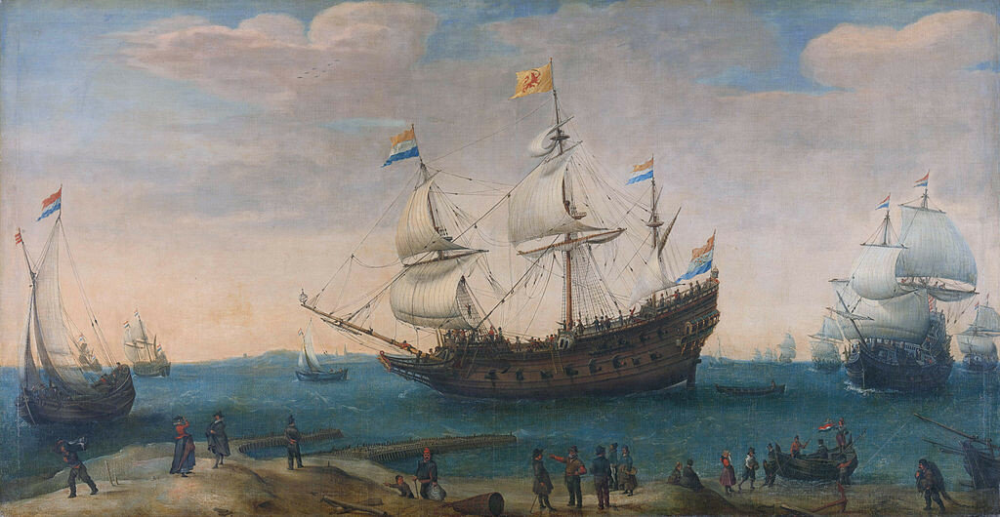
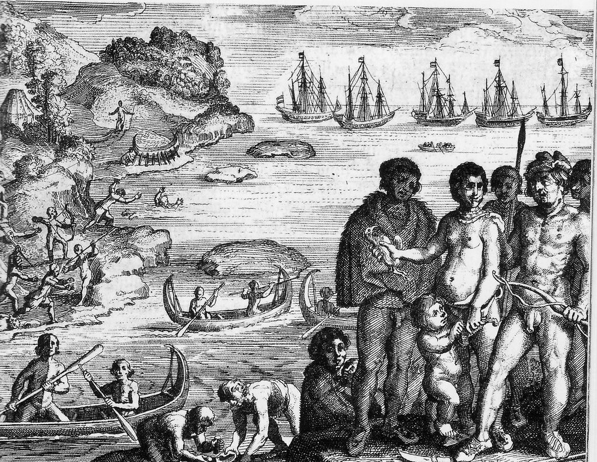
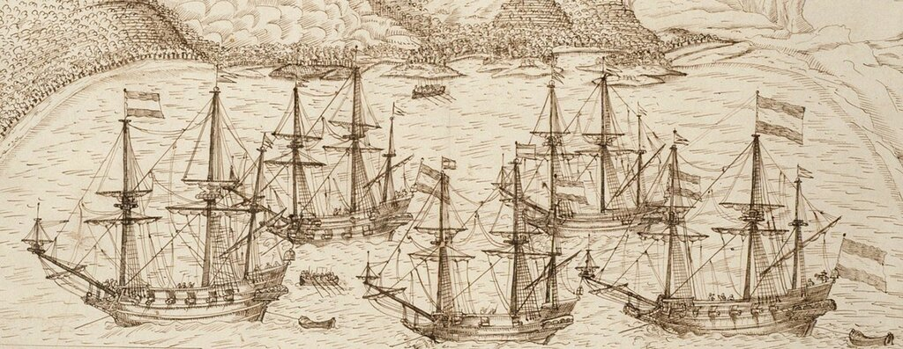

Хотя рассмотренные нами в предыдущем тексте корабли Голландской Ост-Индской компании (ГОИК) типа retourschip были неплохо вооружены, они все же не были военными кораблями в буквальном смысле этого слова. Основной принцип при разработке тактико-технического задания на их проектирование заключался в максимализации количества перевозимых людей и грузов.

Корнелис Вром (Hendrick Cornelis Vroom). Отплытие кораблей Голландской Ост-Индской компании на родину (начало XVII века). Rijksmuseum Amsterdam.
Интересно в этом отношении сравнить два корабля, которые ходили под нидерландским флагом практически в одно и то же время, имели одно и то же название Hollandia и практически одинаковую грузовместимость. Отметим, что это не те популярные у историков «Голландии», одна из которых совершила первое плавание, открывшее эпоху торговли Нидерландов с азиатскими странами, а другая была флагманским кораблем Адмиралтейства Амстердама в различных сражениях Второй англо-нидерландской войны. Первая из наших Голландий была построена на верфи ГОИК в 1619 году как типовой retourschip (грузовместимость 350 ласт), вторая, «военная» Голландия (300 ласт), была спущена на воду в 1623 году и сразу же приняла участие в экспедиции в Азию вокруг Южной Америки в составе эскадры под командованием Якоба Лермита (Jacques L'Hermite); это плавание стоит под номером семь в известном перечне кругосветных путешествий, приведенном Бугенвилем:
/Седьмое плавание/ Голландец Якоб Лермит, командовавший флотилией из одиннадцати кораблей, в 1623 г. вышел из Тексела с намерением покорить Перу. Обогнув мыс Горн, он вошел в Южное море и после ряда боевых действий у принадлежавшего Испании побережья направился к Ладронским островам, не сделав никаких открытий в Южном море. Затем Лермит направился в Батавию. Он умер на корабле при выходе последнего из Зондского пролива. Этот корабль, единственный из всей флотилии, пришел в Тексел 9 июля 1626 г.
Луи Антуан де Бугенвиль. Кругосветное путешествие на фрегате "Будез" и транспорте "Этуаль" в 1766, 1767, 1768 и 1769 годах, М. Географгиз. 1961 (пер. В. И. Ровинской и В. Б. Баженовой)

Встреча экспедиции Якоба Лермита с яганами, аборигенами Огненной Земли (1624)
С трудом подавляю в себе желание окунуться в обстоятельства плавания Лермита, мореплавателя, мало у нас известного, но в данный момент нас интересует лишь один из кораблей его экспедиции, а именно, Голландия. Так уж сложились обстоятельства, что оба корабля – retourschip и военный корабль – вернулись в Нидерланды вместе в 1627 году, в составе регулярного «обратного флота» из Азии, загруженные, что говорится, под завязку. Так вот, корабль компании смог доставить почти в два раза больше груза, чем военная Голландия. Первый корабль (его в переписке называли «большая Голландия») доставил один миллион фунтов пряностей (включая, естественно, перец), 200 сокелей (sockels) мациса (mace, мускатный цвет), 150 бунтов (buntles) шелковой пряжи и 20 502 фунта селитры, которая использовалась в качестве балласта. Здесь необходимо сказать пару слов о таких новых для нас единицах измерения, как sockel и buntle. Sockel или sokkel – это мера веса, используемая почти исключительно в торговле мацисом, мускатным цветом. Мне удалось найти ее значение в книге Uytrekening van de goude en silvere munts waardye, inhout der maten en swaarte der gewigten, in de respective gewesten van Indiën, Vol. 1, 1687. Один sockel равен 154 голландским фунтам, или с учетом того, что голл. фунт равняется 0,494 кг, - 76,076 кг.
С такой единицей, как buntle, сложнее. Известная мера длины пряжи bundle, равная 10 моткам (hanks), каждый из которых для сырого шелка равен 1000 ярдов, здесь вряд ли подойдет: при всей громоздкости цифр вес такого buntle ничтожный, чтобы его учитывать в расчетах грузовместимости. Скорей всего, здесь используется голландский эквивалент единицы бейл (bale )– бунт, кипа. Согласно справочнику Мартини, один бейл для сырого шелка в различных районах составлял от 50 до 200 кг (приблизительно). Т.е. нам следует ориентироваться на вес одного бунта сырого шелка где-то в районе 100 кг. Считать, что этот тюк был более тяжелым, видимо, не стоит, так как высота грузового помещения между палубами, в котором размещались ценные грузы, не превышала 60 см (это мы видим на примере реплики корабля Ост-Индской компании «Батавия»). Такая высота была наиболее удобной при транспортировке груза во время шторма. Бунты и кипы не переворачивались и груз сохранял свою ценность.
Военная Голландия смогла перевезти лишь 500 000 фунтов пряностей, 90 сокелей мациса, 150 бунтов шелка и 27 135 фунтов селитры в качестве балласта. Для того, чтобы переделать военный корабль в транспортный, удовлетворяющий требованиям Ост-Индской компании, требовалось наглухо законопатить пушечные порты, что, естественно, резко снижало боевые качества корабля.
До 1625 года компания не строила военных кораблей на своих верфях, а ограничивалась теми, которые предоставляло ей государство в качестве компенсации за участие купцов в решении общенациональных геополитических задач обеспечения безопасности и господства в мировом океане. Государство, получавшее от компании большой доход в виде уплаты налогов и передачи в казну существенной доли дохода от многочисленных захваченных в качестве приза португальских судов, со своей стороны субсидировало ту часть деятельности компании, которая рассматривалась как вклад в дело борьбы с испанцами и португальцами («иберийским противником»). Поддержка государства как раз и проявлялась в форме передачи кораблей и военного снаряжения, хотя в отдельные периоды не исключалось и прямое денежное кредитование. В то время не существовало единого органа управления военно-морскими силами Нидерландов, каждая провинция имела свое Адмиралтейство и собственные кораблестроительные верфи, которым и направлялись правительственные заказы в интересах ГОИК. На приведенном ниже фрагменте гравюры с изображением прохода эскадры под командованием Йориса ван Спилбергена через Магелланов пролив как раз можно видеть использование военных кораблей Нидерландов в интересах Ост-Индской компании

Корабли экспедиции ван Спилбергена, снаряженные ГОИК, во время прохода через пролив Магеллана (1615). Badische Landesbibliothek INV nr 499b (фрагмент). Анонимный автор.
Три более крупных корабля – это Grote Maan (300 ласт) и Grote Zon (300 ласт) ( оба принадлежали Адмиралтейству Амстердама), а также Morgenster (200 ласт) из Адмиралтейства Роттердама; меньшие по размерам корабли это Zeeuwsche Aelosu (170 ласт) из Адмиралтейства Зеландии, и Jager (70 ласт), который был куплен компанией у военного флота.
После 1625 года строительство военных кораблей для ГОИК на верфях нидерландских Адмиралтейств прекратилось. Компания приступила к их строительству на своих кораблестроительных мощностях. В случае срочной потребности в таких кораблях компания закупала их у флота на свои средства.
Тесное взаимодействие между государством и компанией существовало и в области управления силами флота. Сложилась практика, когда эскадры военных кораблей, снаряжаемых в направлении Южной Америки и Тихого океана, поступали в оперативное подчинение ГОИК с момента пересечения океана. Руководство кораблями со стороны компании осуществлялось и в периоды ведения боевых действий в водах вокруг Филиппин, в Бенгальском заливе и (правда только в течение короткого времени с 1615 по 1620 гг) в Зондском проливе.
О конструкции военных кораблей, которые использовала в своих интересах ГОИК, а также об их эволюции, мы поговорим в другой раз.